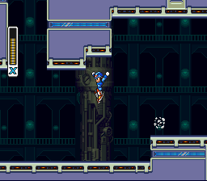
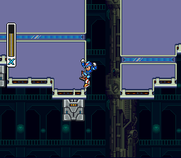
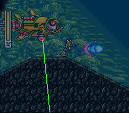
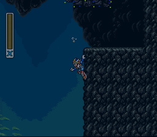
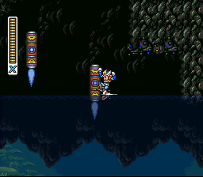

O que são os Heart Tanks?
Os Heart Tanks são itens especiais escondidos na maioria das fases que possuem um chefe principal.
Ao coletá-los, sua barra de energia máxima aumenta permanentemente, tornando as batalha
contra os chefes muito mais fáceis e estratégicas.
Explorar bem cada fase é essencial para encontrá-los, já que muitos estão escondidos em locais secretos
ou exigem habilidades específicas para serem alcançados.


Magna Centipede
Aqui onde tem a primeira caixa que foge de você. Pule bem nessa paredinha com o Dash no ar, Rapidamente, escorregue e dê outro dash no ar para se pendurar aqui.



Bubble Crab
Logo após o primeiro submarino. Corra e pule desta subidinha. Escale esta parede e antes da subida, pule com impulso E alcance esta plataforma. O coração está logo acima.


Morph Moth
Logo no começo da fase, use a Crystal H. para congelar este sujeito. Suba nele e se pendure aqui para subir e pegar o Heart lá em cima, depois da vida.


Overdrive Ostrich
Vá com a moto inteira além desta parte onde aparece um extra life. Logo após, pegue impulso na plataforma a frente para pular nesta plataforma com espetos.


Crystal Snail
Após a primeira rampa, peque aquele robozão, no meio daquela rampa tem um buraco, caia nele, use o dash e a habilidae do robozão de planar até o limite, depois saia dele enquanto usa o dash do X para chegar na plataforma

Wire Sponge
O heart tank está logo no começo da fase, apenas suba essa parede até quase o teto


Flame Stag
Suba RÁPIDO que lá vem lava, Dê o pit-stop aqui com a S. Wheel equipada. Detone o inimigo só com 1 wheel, pegue o coração e VAZE RÁPIDO


Whell Gator
Assim que enxergar o heart. Volte e suba aqui. Bem na pontinha, pule, dê o dash no ar com o Burner carregado e ainda no ponto máximo libere o Burner e se pendure bem na ponta acima dos espetos para pegar o tanque